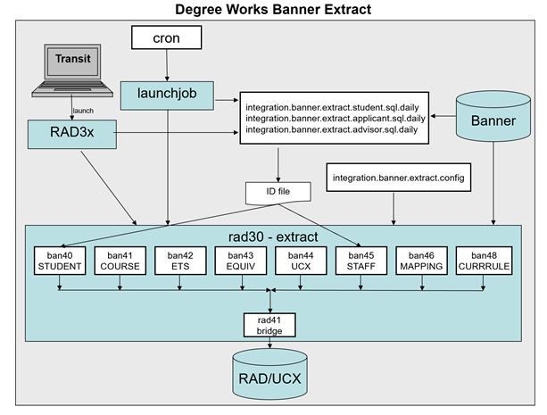

Banner Considerations
Banner Setup Checklist
UCX settings
Review and change UCX settings using Controller.
| UCX | Action |
|---|---|
| UCX-SCR001 STATUS | Change Description to Student Type. |
| UCX-SCR001 SCHOOL | Change Description to Level. |
| UCX-SCR001 LEVEL | Change Description to Student Class Level. |
| UCX-CFG020 BANNER | Be sure the Banner Site flag is Y. You can turn on the Search in Banner flag now but it is suggested that you perform all searches against the bridged data at first while getting everything setup. Leave this flag as N for now but switch it to Y later in your implementation. |
| UCX-CFG020 REFRESH | Set the flags to appropriately configure the refresh parameters. |
| UCX-CFG020 SEARCH | Set the Show flags to N for items you are not using. Show Specialization and Show Liberal Learning should be N because these are not used in Banner. Note - School in Degree Works is actually the same as Level in Banner. |
| UCX-STU352 DISCIPLINE STATUS | Set the Discipline Status flag to I for those disciplines that are Inactive. If a Discipline is Inactive then the class (current, historic and transfer) will be skipped and NOT bridged to the Degree Works rad_class_dtl. |
| UCX-STU385 IN PROGRESS Flag | The default In-Progress flag is N for historical classes found in SHRTCKN. If an historical grade combination in UCX-STU385 (key = School/GradeType/Grade) is considered In-Progress, then set this In-Progress flag to Y so that the rad_inprog_flag on the rad_class_dtl gets built appropriately with a Y value. |
| UCX-STU385 OVERRIDE Flags | There is a master Override flag and 8 Override values. |
| UCX-STU385 Transfer Repeat Flags | There are three Transfer Repeat fields that may be used to override the standard Transfer Repeat Pointer and Repeat Policy used for repeated transfer classes. |
| UCX-BAN080 Custom Data | For special if statements and for any special data desired on the worksheet setup UCX-BAN080. |
Banner data extracts
People selection
Use Controller to modify the listed SQL settings as required, to select the desired users you want to bridge to Degree Works.
A set of sql is delivered in these settings, but you must modify the sql to suit your needs.
integration.banner.extract.student.sql.daily
integration.banner.extract.applicant.sql.daily
integration.banner.extract.adv.sql.daily
integration.banner.extract.advx.sql.daily
integration.banner.extract.reg.sql.dailyThe queries in these files should only select the IDs of the individuals you want to bridge into Degree Works. When the student extract is run, for example, the sql from integration.banner.extract.student.sql.daily is executed and the resulting IDs are then processed by the extract. When running the non-student extract, RAD33, you must specify the user class of the users you want to extract. The job will either use the IDs you specified or will lookup the sql.daily setting based on the user class selected. For example, if you choose REG when running the job the integration.banner.extract.reg.sql.daily setting will be used to select the users. You can create additional sql.daily settings in Controller for the other user classes you use.
You should test the select statements that you use in these settings through a database tool, to verify that the count you get is as expected.
People deletion
Individuals can be deleted from Degree Works by either running RAD40 in Transit or running deleteid through the extract from the command line.
To delete data from Degree Works, use the RAD40 processor in Transit. You can provide the IDs or use selection criteria to identify the individuals that should be deleted, and have the option of either deleting all data or just the data bridged from the student system.
Alternatively, create an ID file of the individuals that should be deleted from Degree Works and run the extract. You must specify the relative or absolute path to the file.
$ bannerextract deleteid deleteFile.idsUCX entries selection
You can run RAD36 in Transit to populate the UCX tables, but it will run the extract on all validation tables. There is no way to select a subset of tables.
If selected UCX tables are to be re-extracted from Banner to Degree Works, on the Classic server, create a UCX file containing a list of Degree Works tables. For example, write one table per line:
STU356
STU385
STU560
Add a .ucx extension to this file in the current directory. The actual file name can be any valid Unix file name. However, it must have the .ucx extension. For example, the file bantables.ucx can reside in your current directory or you can specify the full or absolute path to the file. The banner extract command would be:
bannerextract ucx bantables.ucxWhen the command above is executed, only the Degree Works tables listed in that file will be re-loaded with Banner data. Make sure to check the setting for the UCX-CFG020 RADBRIDGE Add UCX Entries Only flag. Make sure it is set to N if ALL entries are to be reloaded from Banner. If only NEW entries are to be loaded from Banner, make sure this UCX-CFG020 flag is set to Y. It is recommended that this flag always be set to Y.
Extract record selection configuration
Modify the integration.banner.extract.config setting as needed to select a different set of records than those Degree Works is selecting by default.
Make sure to review this setting and make all appropriate changes for your site.
If your Banner database has been configured for MEP (multiple-entity processing), see instructions in the Enable multiple-entity processing for Banner topic.
Post extract
After UCX has been extracted from Banner, you should review each table and field setup as needed.
Be sure not to run UCX extract again, unless the UCX-CFG020 RADBRIDGE Add UCX Entries Only is set to Y so that none of the records you changed will be deleted and only new records in Banner will be added to the UCX.
| Table | Fields to set up |
|---|---|
| UCX-AUD027 | Filter fields |
| UCX-STU016 | Planner and Show in Transfer Equivalency Self-Service flags and the Financial Aid Year and Term Type fields |
| UCX-STU035 | Planner flag |
| UCX-STU307 | Short degree field |
| UCX-STU346 | Calendar codes used in Transfer Equivalency Self-Service |
| UCX-STU352 | Discipline Status (“I” – Inactive) |
| UCX-STU385 | GPA Calc flag |
| UCX-STU385 | In-Progress flag |
| UCX-STU385 | Override flags |
| UCX-STU385 | Override Transfer Repeat flag/fields |
Degree Works Data Extract
Degree Works data extract configuration and installation
The Degree Works Data Extract process for Banner clients uses embedded SQL tools to extract the data
These programs execute on the Degree Works application server – Linux, UNIX, and so on. Ellucian has developed several extract programs to not only extract the required data but to also convert the data to the Bridge Interface Format (BIF) so that it is ready to load into Degree Works.
Verify or perform the following steps to configure your Degree Works server to perform the Banner Degree Works Data Extract.
STEP 1 - Banner Database login
Ensure that the DB_LOGIN_BANNER environment variable is set correctly:
$ env | grep DB_LOGIN_BANNERIf this does not show the correct Banner database login, you need to edit this variable in $DGWBASE/dwenv.config, run setdbpasswords, and log back in to your host session. Here are examples of how to set this variable:
export DB_LOGIN_BANNER=userid
export DB_LOGIN_BANNER=userid@some.other.machine.eduIf the database is on a remote machine, you can use the @ option to specify where the database resides. You must have the remote database server configured in Oracle's tnsnames.ora file.
To set the password for your Banner user run setdbpasswords:
setdbpasswords --sispassword thebnrpasswordEnsure the ORACLE_SID environment variable is set correctly:
$ env | grep ORACLE_SIDIf this is not set correctly, review your setup of $DGWBASE/dwenv.config.
If you are connecting to a Banner database that has been configured as MEP (Multi-Entity Processing), you must create a DB_LOGIN_BANNER user for each MEP entity established in Degree Works. For more information, see the Enable multiple-entity processing for Banner topic.
STEP 2 - Set up UCX-CFG020 RADBRIDGE
Review all settings before running the UCX extract. For more information, see Technical Configuration Reference. Specifically, make sure the Add UCX Entries Only flag is set to Y before running the UCX extract (RAD36).
STEP 3 - Extract UCX and courses
Before attempting to bridge student data from Banner into Degree Works, it is recommended to first extract Validation codes (UCX) and course information. These data are required before Scribe can be used to add or modify requirement blocks in your Degree Works database.
- RAD34 course extract
- RAD36 UCX extract
STEP 4 - Set up UCX-CFG020 BANNER
Review all settings before running the student extract.
Repeat Policy
Although you can use repeat policies 1-6 telling Degree Works to use the class with the best grade or the most recently taken class, it is recommended that you set the Repeat Policy flags to B for all Repeat Indicators.
- Excluded classes will end up in the Insufficient section of the audit but they will not affect the overall GPA or credits.
- Averaged classes will end up in the Insufficient section of the audit and they will affect the overall GPA but will not be counted in the overall credits towards degree.
- Included classes will apply to rules as normal classes affecting the GPA and total credits.
By using the B setting, you are telling Degree Works to handle each class based on the indicator without regard to grades or terms taken as the decision about which classes should be counted and not counted has already been made and recorded using the indicator. When B is in use the normal Degree Works repeat logic is skipped simplifying the auditing process greatly.
The six different Repeat Policy fields should be set to the same value. Only in rare scenarios does it make sense for these to be different.
STEP 5 - Set up SQL select settings
Review or modify the sql in the integration.banner.extract.*.sql.daily settings using Controller before launching the RAD3x processors. Make sure that the number of ID codes selected by the sql statement is what is expected and that they are the correct ID codes. In addition, ensure that you use SELECT DISTINCT(SPRIDEN_ID) when selecting users so that the same ID does not appear more than one time in the results.
Review and modify as needed the setting used to select the students you want bridged to Degree Works:
integration.banner.extract.student.sql.dailyReview and modify as needed the setting used to select the applicants you want bridged to Degree Works:
integration.banner.extract.applicant.sql.dailyReview and modify as needed the settings used to select the non-student users you want bridged to Degree Works. Additional settings can be created in Controller for each additional user class you use.
integration.banner.extract.adv.sql.daily
integration.banner.extract.advx.sql.daily
integration.banner.extract.reg.sql.dailySTEP 6 - Set up integration.banner.extract.config setting
Using Controller, review and modify as needed the integration.banner.extract.config setting to select a different set of records based on your particular needs. The SQL FROM/WHERE clauses for every Banner table used by the Banner extract programs are included in this configuration file.
The config should look like the example you see here – the FROM/WHERE text for your school may need to be changed.
# SGBSTDN must be a; AND is required at the end of the WHERE
SGBSTDN-from: FROM SGBSTDN a
SGBSTDN-where: WHERE a.SGBSTDN_TERM_CODE_EFF =
SGBSTDN-where: (SELECT MAX(b.SGBSTDN_TERM_CODE_EFF)
SGBSTDN-where: FROM SGBSTDN b WHERE b.SGBSTDN_PIDM = a.SGBSTDN_PIDM)
AND
# a.SGBSTDN_PIDM = <students-pidm>A special set of records with keys of CALCFCN-from: and CALCFCN-where: have been created for the special Banner function: F_CLASS_CALC_FCN. This function call is made by the banner student extract using the PIDM, LEVL_CODE and TERM_CODE specified in this setting to generate the student’s Class Standing code that is loaded into the rad_stu_level on the rad_goal_dtl. A default set of special records with a key of CALCFCN are included in this configuration file and are loaded with the FROM and WHERE clauses from the SGBSTDN default entry. Change this set of CALCFCN records as appropriate for your site.
Here is an example of the SORLCUR/SORLFOS entries in this configuration file:
########## SORLCUR - LEARNER CURRICULUM (ban40) ##########
# SORLCUR must be a; AND is required at the end of the WHERE
SORLCUR-from: FROM SORLCUR a
SORLCUR-where: WHERE a.SORLCUR_CACT_CODE = 'ACTIVE'
SORLCUR-where: AND a.SORLCUR_SEQNO =
SORLCUR-where: (SELECT MAX(b.SORLCUR_SEQNO) FROM SORLCUR b
SORLCUR-where: WHERE b.SORLCUR_PIDM = a.SORLCUR_PIDM
SORLCUR-where: AND b.SORLCUR_PRIORITY_NO = a.SORLCUR_PRIORITY_NO
SORLCUR-where: AND b.SORLCUR_LMOD_CODE = 'LEARNER')
SORLCUR-where: AND
# a.SORLCUR_PIDM = <students-pidm>
########## SORLFOS - STUDENT FIELD OF STUDY (ban40) ##########
# SORLFOS must be a; AND is required at the end of the WHERE
SORLFOS-from: FROM SORLFOS a, SORLCUR b
SORLFOS-where: WHERE b.SORLCUR_CACT_CODE = 'ACTIVE'
SORLFOS-where: AND b.SORLCUR_SEQNO =
SORLFOS-where: (SELECT MAX(c.SORLCUR_SEQNO) FROM SORLCUR c
SORLFOS-where: WHERE c.SORLCUR_PIDM = b.SORLCUR_PIDM
SORLFOS-where: AND c.SORLCUR_PRIORITY_NO = b.SORLCUR_PRIORITY_NO
SORLFOS-where: AND c.SORLCUR_LMOD_CODE = 'LEARNER')
SORLFOS-where: AND a.SORLFOS_CSTS_CODE = 'INPROGRESS'
SORLFOS-where: AND a.SORLFOS_CACT_CODE = 'ACTIVE'
SORLFOS-where: AND a.SORLFOS_PIDM = b.SORLCUR_PIDM
SORLFOS-where: AND a.SORLFOS_LCUR_SEQNO = b.SORLCUR_SEQNO
SORLFOS-where: AND
# a.SORLFOS_PIDM = <students-pidm>
Batch data extract process
The batch extract programs are extracted either through Transit’s RAD3x family of jobs or by running the launchjob script through cron.
When extracting students, Degree Works automatically runs a new degree audit for each of the students that has changed data as of the last time they were extracted. In doing this, you will be sure that each student’s degree audit reflects any changes made to their student record.
Student and applicant academic data are required for Degree Works to generate a degree audit. Ellucian extracts student data, applicant data, advisor information, your course catalog, and the list of transfer institutions from the Banner database and stores this data in the Repository for Academic Data (RAD) database tables. This procedure is known as the Degree Works Bridge process and consists of the following data extraction processes:
- Students - active students’ academic data are extracted based on the SQL specified in the integration.banner.extract.config setting. Student data can also be extracted individually by the SPRIDEN ID.
- Applicants - admissions applicants academic data may be extracted based on the SQL specified in the integration.banner.extract.config setting. However, only unique combinations of the Level (School) and Degree may be extracted, which assumes the UCX-CFG020 BANNER configuration flags are set appropriately or the APPLICANT data extract is performed. Applicant data may also be extracted individually by the SPRIDEN ID.
- Non-students - access records are created for advisors, deans, and other non-student user classes who require access to Degree Works.
- Course Catalog - all current courses from your course catalog.
- Course Equivalents - historic courses and their current equivalent courses.
- Curriculum Rules - curriculum rules used by What-if audits.
- ETS - transfer institution codes, names, and identification data.
- UCX Validation Codes - validation tables consisting of data from Banner STV tables.
- Mappings - Transfer Articulation Mappings for import into Transfer Equivalency Admin and Transfer Equivalency Self-Service. This mapping information can also used by Course Link.
The ETS extract must be run before the mappings extract.
Banner Extract flow diagram

RAD30 (Student extract) with launchjob
The sample JSON job files in app/samples should be copied to a new $ADMIN_HOME/myjobs directory that you create. You then modify the files in your myjobs directory as needed.
To run the student extract using the default integration.banner.extract.student.sql.daily setting, your JSON file needs to be set up like this:
{
"name": "RAD30",
"parameters": [{
"type": "SELECTDEFAULTQUERY",
"usingDefaultQuery": "true"
},
{
"type": "QUESTIONS",
"answers": [{
"id": "rad30.forceNewAudits",
"value": "false"
}]
}
]
}By default, new audits are generated only for students with data changes coming from Banner. If you want to generate audits for all students regardless of data changes being detected, you can set the rad30.forceNewAudits flag to true. You then specify your JSON file when running launchjob:
$ launchjob $ADMIN_HOME/myjobs/rad30.defaultStudentSql.jsonYou can also specify a list of student IDs to be extracted. If you are using a JSON file, it would look like this:
{
"name": "RAD30",
"parameters": [{
"type": "SELECTIDLIST",
"ids": ["studentId1",
"studentId2",
"studentId3",
"etc"
]
}, {
"type": "QUESTIONS",
"answers": [{
"id": "rad30.forceNewAudits",
"value": "false"
}]
}]
}However, if you have a file of student IDs, it is probably easier to use Transit to import the IDs instead of creating a JSON file like the one above. You would need to create a JSON file only if, for some reason, you needed to load the IDs in your cron job or if you could not access Transit.
You would then specify your JSON file containing the IDs when running launchjob. For example:
$ launchjob $ADMIN_HOME/myjobs/rad30.myids.jsonTo extract a single student ID it is easiest to use Transit or the refresh button on the dashboard.
RAD32 (Applicant extract) with launchjob
To run the applicant extract using the default integration.banner.extract.applicant.sql.daily setting your JSON file needs to be set up like the one above for students using the default SQL file except change the name to RAD32.
You then specify your JSON file when running launchjob. For example:
$ launchjob $ADMIN_HOME/myjobs/rad32.defaultApplicantSql.jsonPlease see the student example above on creating a JSON file to run a list of IDs. To run a list of applicant IDs, you use the same JSON file format, except you need to change the name property to RAD32.
RAD33 (Non-student extract) with launchjob
The RAD33 job is used to extract non-students. This includes advisors, deans, and so on. When running RAD33, you must specify the user class. When usingDefaultQuery is true in the JSON file, the extract will use the sql.daily setting based on the user class you specify. For example, if the user class is defined as ADVX in the JSON file, the extract will use the setting named integration.banner.extract.advx.sql.daily to select this pool of users and assign them the ADVX user class. You can create new sql.daily settings in Controller for each user class from AUD012 that you use. A few non-student sql.daily settings are delivered to you by default, but each needs to be reviewed and changed as needed.
See the sample RAD33 JSON files in the $DGWHOME/samples directory to see how to run RAD33 using either the default SQL or by providing a list of IDs.
Deleting IDs
To delete unwanted IDs from the Degree Works database, you can create an ID file with just those individuals and import the file into the RAD40 Student Data Delete Processor in Transit
When running RAD40, you can choose to delete the audits, plans, notes, and exceptions for a student in addition to all bridged data by checking the Delete non-bridged data check box.
Selected UCX tables
To run the ucx extract using a list of Degree Works UCX tables listed in a file with a .ucx extension (do NOT use with cron):
$ bannerextract ucx someucxtables.ucxFor example, the someucxtables.ucx file might contain tables:
STU352
STU560
STU563In this case, ONLY these 3 UCX tables will be re-extracted from Banner.
Make sure to check the setting for the UCX-CFG020-RADBRIDGE Add UCX Entries Only flag BEFORE running the UCX bannerextract. Make sure it is set to N if ALL entries are to be reloaded from Banner. If only NEW entries are to be loaded from Banner, make sure this UCX-CFG020 flag is set to Y. Most of the time you will want to keep this flag set to Y so existing entries and their values are not lost.
In the above example, UCX-STU352 is being re-extracted. It has a Discipline Status flag in it, which is manually input using Controller. These updates will need to be made again if the entire UCX-STU352 is re-extracted.
Other modes
The other extract modes do not have associated sql files. These modes extract ALL records from the Banner database and load them into the associated Degree Works database tables. However, you can modify the relevant sections in the integration.banner.extract.config Shepherd setting to control exactly which records are bridged into Degree Works.
These other modes do not have parameters so the JSON file you would use with the launchjob script would look like this with the appropriate RAD3x name specified:
{
"name": "RAD3x"
}Each job can be run manually in Transit. The JSON file is required when running these jobs in cron.
- Course – RAD34 - only adds and updates rad_course_mst records, but deletes and re-adds rad_crs_attr_dtl records.
- Curriculum Rules – RAD35 - the old curriculum rules are first deleted, and then new curriculum rules are re-added.
- Equivalences – RAD38 - the dap_eqv_crs_mst, UCX-CFG070, and UCX-CFG073 are first deleted and all equivalencies and cross-listings are re-added.
- ETS (transfer schools) – RAD37 - only adds and updates rad_ets_mst records (no deletes).
- Mappings – RAD39 - the old mappings are first deleted, and then new mappings are re-added.
- UCX (Validation tables) – RAD36 - if UCX-CFG020 RADBRIDGE Add UCX Entries Only = N, all records are deleted and re-added. If UCX-CFG020 RADBRIDGE Add UCX Entries Only = Y, only new records will be added (no updates).
Bridge audits
When an extract finishes loading student data, a list of students with changed data is created. This list of students is then passed onto DAP22 to have audits run to ensure the latest audits reflect the data changes. You can control how these audits are created by modifying the integration.bridge.audits settings in Controller. See integration.bridge for information on these settings. A separate dap22 log file is created for this process and can be accessed through Transit. You can review it to see how many students had data changes and to check the status of those audits.
Extract scheduling
The extracts can be scheduled to run on a recurring basis in Transit or by using launchjob.
The batch data extracts should be scheduled to run on an individual or recurring basis in Transit. Users with access to create scheduled jobs and job sequences will see this option in Transit. This method allows users who cannot access the server to manage when and how often the extracts run. See the Job scheduling and Job sequences topics for additional information. Ellucian recommends running the student extract nightly to ensure your student data is current. Other extracts can be run as needed.
Alternatively, users with access to the server can use the launchjob script to schedule the extract to run using cron. The launchjob script does require a parameter file in JSON format. When running any of the extracts manually, you should use Transit. The launchjob script is intended to be used when scheduling jobs in cron. After running launchjob, the resulting log file can be viewed in Transit.
The launchjob script only submits a request for the job. It does not run the job itself. The job goes into the queue and is run by one of the Transit Executors. It does not usually wait for the job to complete so it is best to use the --wait option when running extracts through cron to ensure the next job will start only after the previous job is finished. You do not always need to do this, but it is safer because some extracts do use data from the previous extract. For example, the student extract uses data from the course, ucx, ets, and equiv extracts. Without the --wait option specified, the launchjob script places the request to run the job on the queue and returning immediately. This means multiple jobs will run in parallel, and problems could occur. There is also a jobstatus command that can be used in a script to obtain the status of a job. It also has a --wait parameter that acts similarly. See Transit Administration for more information on the launchjob and jobstatus commands.
Dynamic Data Extract process
In addition to extracting student data through the batch extract, you can extract data for a single student using the dynamic method.
There are two ways in which a dynamic extract may take place: the first is available from within the Degree Works Responsive Dashboard as a button, and the second occurs whenever a triggering event takes place.
The first way of performing a dynamic extract from Banner is to push a button. Users with the SDREFRES key will be shown the Data refreshed field in the student context area at the top of the Responsive Dashboard. This is the last time the student's academic data was copied from Banner into Degree Works. When users also have the SDREFBTN key, they will be able to click a button to refresh the student.
You can hover over the Data refreshed field to see the Data last changed date. This is the last time the student's data was changed, which may be older than the last time it was refreshed. At any time, users can click the on-demand refresh button to again pull in this student's data. Users may want to do this after a major or grade change was made in Banner and they do not want to wait for the nightly batch extract. After the extract process completes, the user will get a confirmation message and the Last Refresh date/time will be updated. A new audit is automatically created.
The second way of performing a dynamic extract involves a triggering event, which may occur when any user requests an audit from the Worksheets, What If, Planner, or Exceptions. The UCX-CFG020 REFRESH record in Controller is used to control this behavior.
If you have the BRIDGNEW key, you can bridge students and applicants from Banner who are not yet in Degree Works. You must also have the SDFINDID, SDSTUANY, and SDREFBTN Shepherd keys. To bridge a new student, search for the student by ID in the ID field on the student data card or in advanced search. If the ID exists in Banner and is a valid student or applicant, you will be asked if you want to bridge now. After the student is bridged, a new audit is generated and shown in the dashboard.
Audit generation with dynamic refresh
Turning on the Dynamic Refresh with all or some of the other flags turned on will affect performance – both for all users of the system and the particular users attempting to run an audit.
Before Degree Works runs the requested audit it refreshes the student’s academic data from Banner – this takes extra time and will consume additional system resources. When a refresh occurs through running an audit the user is not notified – but the Last Refresh date/time is updated.
The Refresh timeout in minutes in CFG020 Refresh is a mechanism you may use to inhibit repetitive dynamic refreshes for students that are incidental and not necessary, for instance when multiple What-Ifs are being launched within a short time span. You may specify a length of time during which no additional refreshes of data would be appropriate. This timeout setting is used in conjunction with the refresh date/time stored on the rad-primary-mst to tell Degree Works if it should re-read the student’s data in Banner.
As with the batch extract process, the Banner student extract and RAD bridge routines are used to perform the dynamic refresh. The bridge does check for changed data and will skip the insertion of records if no changes exist, but it will update the refresh date/time on the rad-primary-mst and the bridge date/time shown on the dashboard either way.
Audit viewing with dynamic refresh
With the Refresh before viewing an Audit flag set to Y, the system will check the timeout setting, as with running an audit, and will execute the extract as needed.
If there are data changes, a new audit will be run. In addition, the audit and refresh date and times will be updated in the dashboard, reflecting what has just occurred. When an extract is processed while in View mode, the bridge date and time are not updated if there are no real data changes, which is different from when in Run mode.
Banner Database Considerations
Banner database configuration
Enable multiple-entity processing for Banner
Banner Workflow integration installation
Configure Banner Workflow integration in Degree Works
You must complete the configuration steps in Degree Works for Banner Workflow integration.
Procedure
Configure Banner Workflow integration in Banner
Petition approval management tools
Degree Works provides a native tool to allow your users to approve or reject petitions. However, if you are using Banner Workflow to manage petition approval, it would be best to not use the Degree Works tool because using both mechanisms will most likely lead to confusion on campus about the approval process.
The Exception Management tab in the Responsive Dashboard supports a way to approve or reject petitions. This should be turned off if Banner Workflow is being used to manage petitions approval.
See the Exception Management topic for more information.
Integration with portals
End-user access to Degree Works by Banner customers is typically accommodated through either Banner Self-Service or Student Profile.
Self-Service Banner (Banner 8)
Single sign-on for Degree Works using Self-Service Banner (Banner 8)
Set up menu for student role
Menu setup for faculty role
Configure logout
You can redirect users to the SSB page when they log out.
Procedure
- To redirect users to the SSB page when they click Logout, configure the core.security.logoutUrl setting in Controller for the dashboard specification.
- Change the example URL to your Banner Self-Service URL.